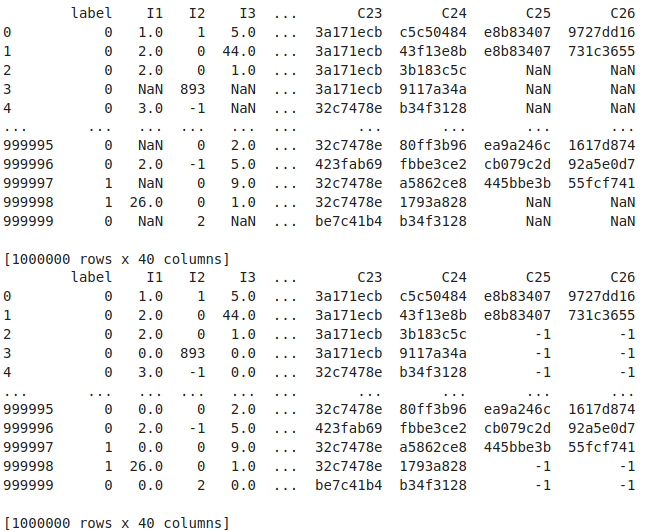
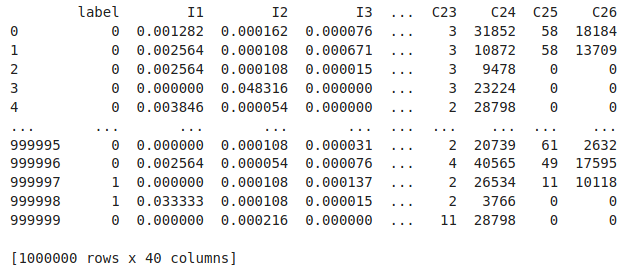
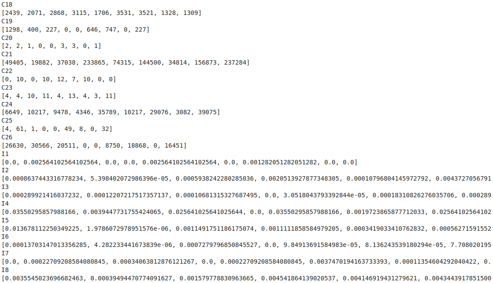
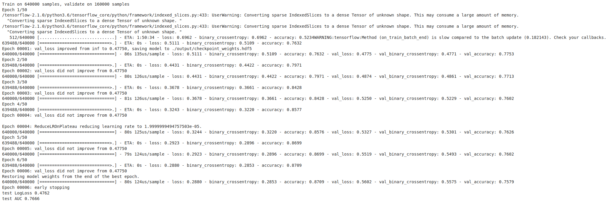

目标
使用deepCTR库快速完成一个deepFM模型训练
开发环境
Google Driver + Google Colaboratory
在Driver中创建ctr.ipynb用Colaboratory打开
数据集
数据集我们使用Kaggle上比赛 Criteo Display Advertising Challenge Predict click-through rates on display ads 的数据集
Kaggle网站上的数据下载地址已失效，下载地址点此
准备原始数据
连入Google Driver
1 | from google.colab import drive |
下载criteo数据集
1 | %cd raw |
在Google Driver中解压
train.txt 11G
test.txt 1.4G
源文件太大，我们取前100w行做训练
1 | !head -n 1000000 train.txt > train_sub100w.txt |
配置环境
因为Colaboratory环境有有GPU，所有我们安装DeepCTR的GPU版本
1 | pip install deepctr[gpu] |
1 | import pandas as pd |
数据预处理
数据集本身没有column名，手动加上，
label是结果
I1-I13是连续型的类型
C1-C26是离散型的数据
所有数据都hash脱敏
导入csv并补0
1 | columns = ['label','I1','I2','I3','I4','I5','I6','I7','I8','I9','I10','I11','I12','I13','C1','C2','C3','C4','C5','C6','C7','C8','C9','C10','C11','C12','C13','C14','C15','C16','C17','C18','C19','C20','C21','C22','C23','C24','C25','C26'] |
输出

数据编码和归一化
LabelEncoder可以将标签分配一个 0—n classes之间的编码 fit_transform(self, y) Fit label encoder and return encoded labels
MinMaxScaler将属性缩放到一个指定的最大和最小值（通常是1-0）之间
1 | for feat in sparse_features: |
输出

可以看到连续型的I字段都已经呗归一化到0-1之间
离散型的C字段每个hash值都被分配了一个编号，例如C25的第一行第二行都是e8b83407，编码后都是58
获取feature name
1 | from deepctr.models import DeepFM |
输出
[‘C1’, ‘C2’, ‘C3’, ‘C4’, ‘C5’, ‘C6’, ‘C7’, ‘C8’, ‘C9’, ‘C10’, ‘C11’, ‘C12’, ‘C13’, ‘C14’, ‘C15’, ‘C16’, ‘C17’, ‘C18’, ‘C19’, ‘C20’, ‘C21’, ‘C22’, ‘C23’, ‘C24’, ‘C25’, ‘C26’, ‘I1’, ‘I2’, ‘I3’, ‘I4’, ‘I5’, ‘I6’, ‘I7’, ‘I8’, ‘I9’, ‘I10’, ‘I11’, ‘I12’, ‘I13’]
构筑input data
1 | train, test = train_test_split(data, test_size=0.2) |
输出每个column包含的前9个值（节选）

训练
设置输出地址
1 | output_path = "./output" |
Keras fit方法的定义
fit(self, x=None, y=None, batch_size=None, epochs=1, verbose=1, callbacks=None, validation_split=0.0, validation_data=None, shuffle=True, class_weight=None, sample_weight=None, initial_epoch=0, steps_per_epoch=None, validation_steps=None)
x：输入数据。如果模型只有一个输入，那么x的类型是numpy array，如果模型有多个输入，那么x的类型应当为list，list的元素是对应于各个输入的numpy array。如果模型的每个输入都有名字，则可以传入一个字典，将输入名与其输入数据对应起来。
y：标签，numpy array。如果模型有多个输出，可以传入一个numpy array的list。如果模型的输出拥有名字，则可以传入一个字典，将输出名与其标签对应起来。
batch_size：整数，指定进行梯度下降时每个batch包含的样本数。训练时一个batch的样本会被计算一次梯度下降，使目标函数优化一步。
epochs：整数，训练终止时的epoch值，训练将在达到该epoch值时停止，当没有设置initial_epoch时，它就是训练的总轮数，否则训练的总轮数为epochs - inital_epoch
verbose：日志显示，0为不在标准输出流输出日志信息，1为输出进度条记录，2为每个epoch输出一行记录
callbacks：list，其中的元素是keras.callbacks.Callback的对象。这个list中的回调函数将会在训练过程中的适当时机被调用，参考回调函数
validation_split：0~1之间的浮点数，用来指定训练集的一定比例数据作为验证集。验证集将不参与训练，并在每个epoch结束后测试的模型的指标，如损失函数、精确度等。注意，validation_split的划分在shuffle之后，因此如果你的数据本身是有序的，需要先手工打乱再指定validation_split，否则可能会出现验证集样本不均匀。
validation_data：形式为（X，y）或（X，y，sample_weights）的tuple，是指定的验证集。此参数将覆盖validation_spilt。
shuffle：布尔值，表示是否在训练过程中每个epoch前随机打乱输入样本的顺序。
class_weight：字典，将不同的类别映射为不同的权值，该参数用来在训练过程中调整损失函数（只能用于训练）。该参数在处理非平衡的训练数据（某些类的训练样本数很少）时，可以使得损失函数对样本数不足的数据更加关注。
sample_weight：权值的numpy array，用于在训练时调整损失函数（仅用于训练）。可以传递一个1D的与样本等长的向量用于对样本进行1对1的加权，或者在面对时序数据时，传递一个的形式为（samples，sequence_length）的矩阵来为每个时间步上的样本赋不同的权。这种情况下请确定在编译模型时添加了sample_weight_mode=’temporal’。
initial_epoch: 从该参数指定的epoch开始训练，在继续之前的训练时有用。
steps_per_epoch: 一个epoch包含的步数（每一步是一个batch的数据送入），当使用如TensorFlow数据Tensor之类的输入张量进行训练时，默认的None代表自动分割，即数据集样本数/batch样本数。
validation_steps: 仅当steps_per_epoch被指定时有用，在验证集上的step总数。
1 | from tensorflow.keras.callbacks import TensorBoard, ModelCheckpoint, EarlyStopping, ReduceLROnPlateau |
输出

第一个epoch即可达到最佳效果，继续训练出现过拟合，正常现象